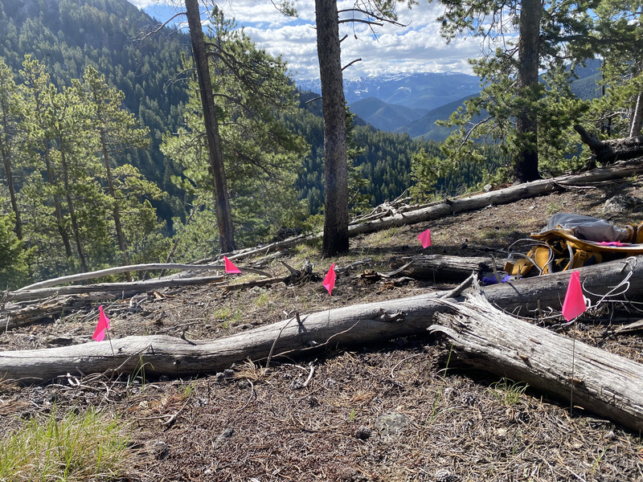
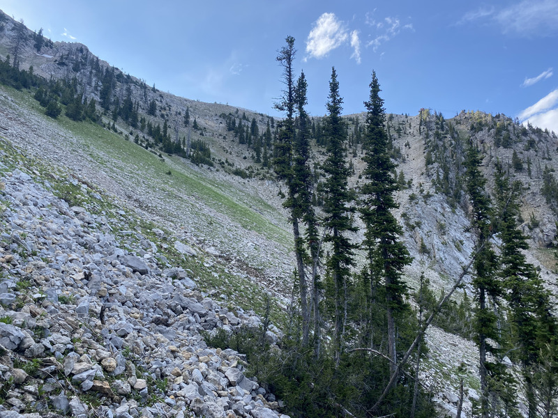
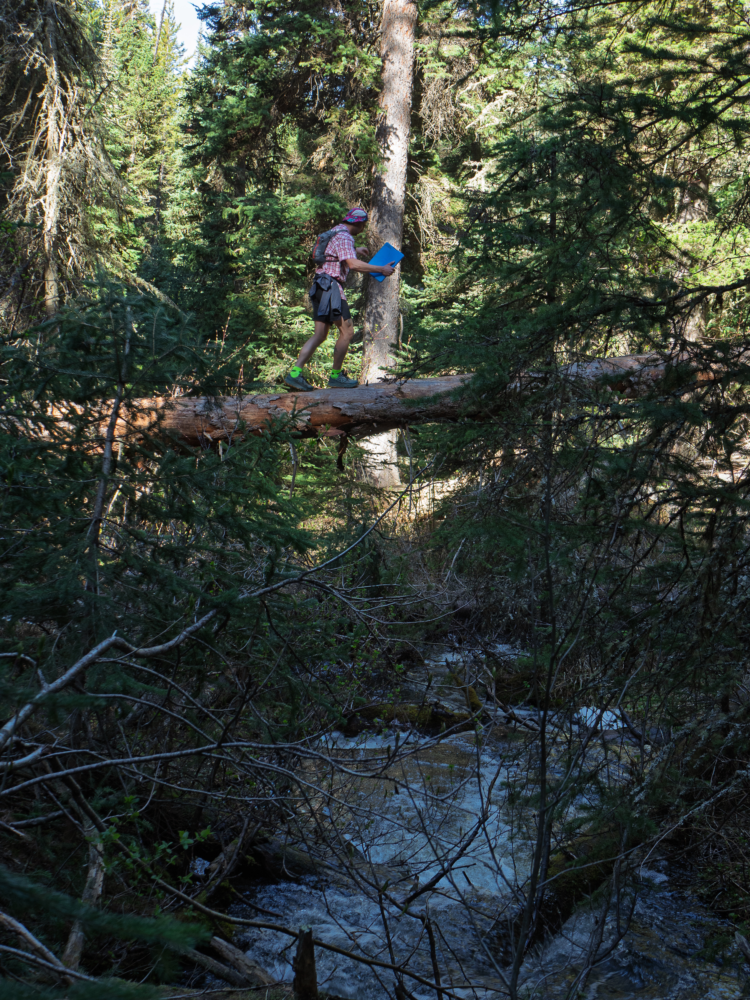
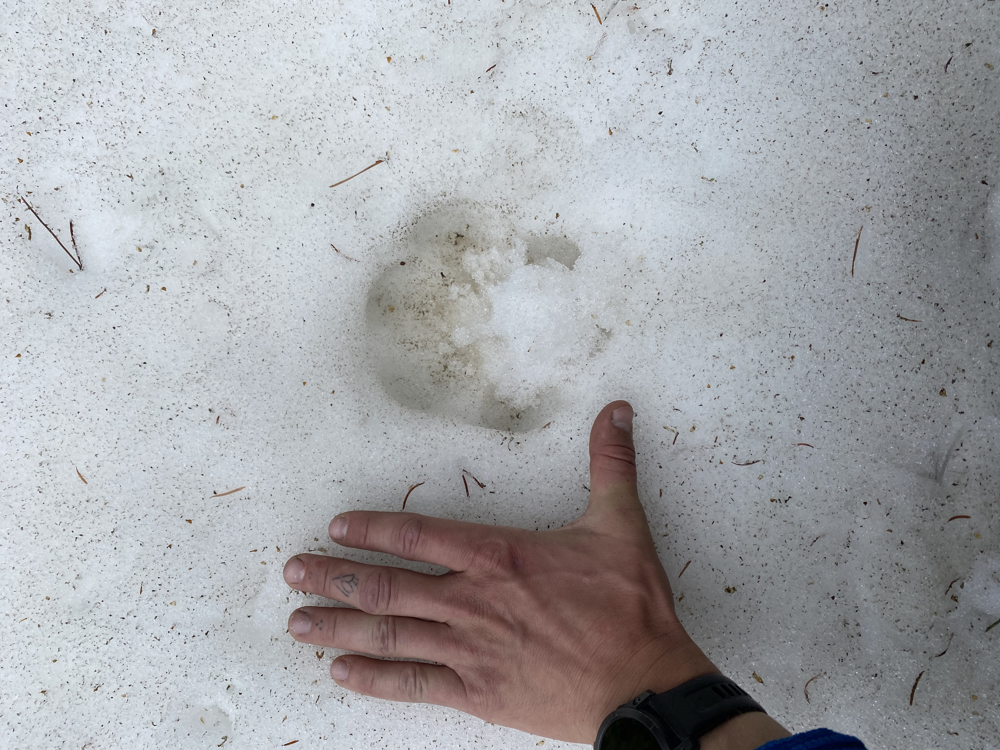

Are you interested in joining the Wetzel Lab?
Recruitment
As of 1/14/2026, I am seeking to hire another summer undergraduate technician to join in helping me with fieldwork.
Project overview
My research focuses on using plant physiology to test the effects of climate change on plants and herbivorous insects. More specifically, in the field and greenhouse, I monitor how plant plant-physiological traits help/ hinder plants subject to an increase in temperature and drought, and how these tolerance-based responses affect plant-herbivore dynamics.
What my summers look like
From ~April-September, I spend 3-4 days a week in the field monitoring Collinsia parviflora distributions, plant herbivory, plant fitness, and arthropod populations associated these plant communities. To accomplish this, I sample from three field locations along elevational gradients in the Gallatin and Spanish Peak ranges of Montana. Within these field locations, I select ten evenly spaced sample locations along an elevational gradient. For example, if my field location spans from 5000-10000 feet of elevation, I sample every 500 feet of elevation gain. In the Spring, due to snow, I focus my sampling on lower elevations, but as the season progresses, I start to work my way up the slope, eventually conducting weekly sampling at the highest possible elevations.
In the summer of 2025, on foot, I traveled 113 miles and over 41,000 feet of elevation. In 2026, I would like to increase this effort, with the help of an undergraduate technician, and collect more data to get a finer resolution look at plants and insects within this system.
Accessibility of my field sites range from single-track trails to forest roads. Because of this, sampling can become easier as the season progresses and forest roads open to multi-sport use. For example, if the trail allows bikes and you would prefer to bike to gain access, you are welcome to do that. However, while some sites may be accessible via forest road, all of my sample areas are off-trail to ensure we are sampling from as natural of a community as possible.
Does this project interest you?
If interested, it is imperative to take the following information seriously.
My field sites are:
All in grizzly bear country
Rural and often times secluded
Devoid of cell-phone service
Riddled with challenging terrain


Figure 1. Left. A field site at ~7500 ft. Right. Me crossing a creek to access a field site. And lastly, a scree field that I navigate through to set to sampling locations.
On maximum effort days, you may find yourself travelling 10+ miles and ~5000 feet of elevation to access field sites. I will do my best to to not have you conduct multiple 10+ mile days in one week. It is imperative that you are able to pack in the food and water you will need for sampling. In addition to these main points, it is also worth noting that the areas I sample have other large animals, like black bears, wolves, mountain lions, moose, and elk. Lastly, of the sampling occurs on very steep, often loose, slopes (the favorable environment of Collinsia).
To be explicit; I am seeking to hire someone who is competent and confident navigating in the Montana wilds and is fit enough to handle large-effort days that require long miles, high elevation, and sound data collection.


Figure 2. Left. A photo of me crossing a creek via log bridge to access sampling areas. Right. A paw print with my hand for size reference at ~9000 ft elevation in the Gallatin Range.
Requirements and expectations
Requirements:
You must be curious and interested in science!Comfortable navigating back country terrain alone. You may find yourself conducting solo sampling efforts.
Able to travel 10+ miles per day with elevation gain ranging from 500-4800 feet (5500-10300 feet). You are not expected to travel 10+ miles every day, but there may be weeks where you are tasked with three days of this mileage.
Comfortable navigating Grizzly bear country.Capable of navigating both on and off trail. This includes navigation skills as well as confidence in uneven terrain.
Competence in the Microsoft suite of applications.
Preferred skills and experience:
- Some experience (formal or informal) in plant and arthropod identification is preferred, but it is not necessary.
- If you do not have experience in either plant or arthropod identification, no worries! If you are curious and willing to learn, I am happy to work with you to develop these skills.
- 1+ years of outdoor experience in Montana or similar ecosystems / states
- No activity requirements, but an understanding of the landscape is preferred.
- 1+ years of experience working in a natural science lab
- E.g., Entomology, Ecology, Environmental Science, etc.
- Not required! Everyone starts somewhere!
Please reach out!
If the idea of spending time navigating trails in Montana to collect data on plants and arthropods, please consider reaching out to me or my PI, Will Wetzel.